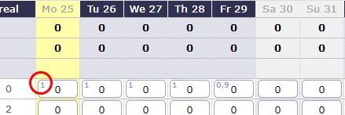
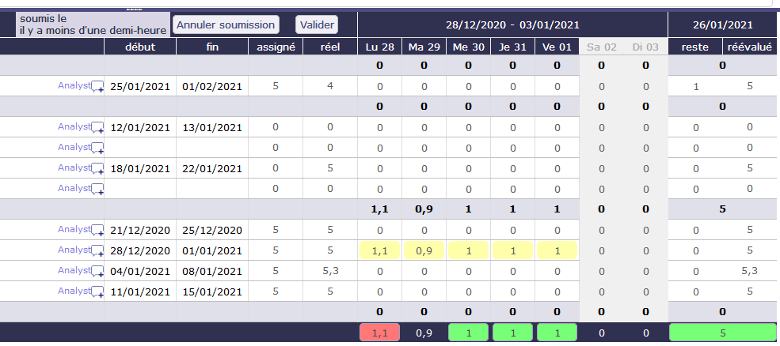

Real work allocation¶
Timesheet¶
This screen is dedicated to entering actual work.
The resource completes their work every day, for each assigned task.
Data entry for a resource is done on a weekly basis.
The corresponding cost to the real work is automatically updated to the assignment, activity and project.
Timesheet zone screen

 Selection and filters
Selection and filters
This filters allows to select a timesheet for a resource and for a period.
Resource selection
- By default, users can only select themselves as a resource.
- Access to other resources timesheet depending on Specific access.
Selection period
By default, the period is determined according to the current day.
Targeted periods are displayed in different places on the screen.
- You can select the number of the week and its year directly with the corresponding filters.
- The “first day” filter allows you to choose a specific date, day, month and year. The full week containing this date will be displayed.
- The button today targets the current week
- The D-day is highlighted.
 Tools
Tools
- Click on
 to save timesheet datas.
to save timesheet datas. - Click on
 to refresh datas.
to refresh datas. - Click on
 to display options.
to display options. - Click on
 to print timesheet.
to print timesheet. - Click on to export timesheet in PDF format.
- Click on to export timesheet in CSV format.
{kind=link}
{kind=link}
Timesheet options
Filters allow to define the list of tasks displayed.
Show only current week meeting
- Recurring meetings display all meetings with one meeting per line. Depending on the period and frequency of your recurring meetings, many lines may be displayed.
- With this option, you only display meetings for the week displayed on the screen..
Hide done items
- Check this box to hide completed tasks. With left work to 0.
Hide not started items
- Select this check box to show or hide unsupported tasks. The macro state in progress must be activated and saved for the tasks to appear.
Limit list of resource for selected project
- You can limit the display of the resource selection drop-down list. If you have selected a project in your project selector then you will only see the resources assigned to that project.
Show closed items
- Check this box to show closed tasks. Archived tasks.
Show planned work
- Planned work is indicated on each input cell, in the upper left corner, in light blue.
- Allows you to display the planned working time per day for the resource assigned to the task.
Planned work
Show ID
- Show ID to identify all single task.
 Data entry validation
Data entry validation
Enter real as planned
- Planned work on an activity for a resource is carried forward for each day.
- If there is no figure displayed then it means that the resource is not supposed to be informed of the actual work on this activity during this period.
- Even if planned work is scheduled for a resource, there is nothing forcing it to complete its work as expected.
- The option Show planned work must be activated.
Submit work
ProjeQtOr offers a system of validation of charges which makes it possible to follow the information of the real work of resources by a hierarchical manager.
The validation system is optional and can therefore be hidden.
After sending the actual work, you can no longer change the actual working time for the week.
You must cancel the validation request to make a change.
Validate work
- Project managers can validate the work or any other personalized profile authorized to do so.
- Only people with the necessary permissions can see this button
- When the work is validated, then the resource can no longer modify its work on this week. Likewise, the cancellation of validation will no longer be available.
 Task Zone
Task Zone
The list displays the tasks assigned to the resource selected in the list.
Click on the activity name to access the activity details screen.
Tasks assigned with actual work are always displayed, even when closed.
The function of the resource on this task is displayed at the end of the line.
Note
- The icon allows you to add a comment.
- The icon
 indicates that there is a comment on the assigned task.
indicates that there is a comment on the assigned task. - Simply move the mouse over the icon to see the latest comment.
- Click to view all comments
- A global comment can be added on the weekly follow-up.
{kind=link}
The Start and End columns display the planned dates for each activity.
 Entry field
Entry field
In order to see and know the assignments on a task, several columns indicate the periods assigned to a resource
Assigned
It is the work assigned to the resource that is calculated by the software.
Real work
This is the work actually performed and reported by the resource.
Left work
This is the work that the resource still has to provide for this task
Left work is automatically decreased on input of real work.
Resources can adjust this value to estimate the work needed to complete the task.
Reassessed
This is the work required to complete the task. It’s the actual work + the rest to do. See: “progress-section-date-duration”
- You cannot edit Assigned Work, Actual Work, and Reassessed directly in columns.
- This information is calculated directly by the software based on what you have entered
Real work entry
- Area to enter real work. It possible put real work in off days.
- Columns of days off is displayed in grey.
- Days off is determine in resource calendar definition.
Total of days
On the last row is the sum for all days of the week.
It is a synthesis displayed for each project and globally for the whole week.
The resource capacity is defined by the number of hours per day and the resource capacity (fte).

Total of the day Zone
- The total of the day is green whether entries respects the resource capacity of days.
- The total of the day is red whether entries is more than the resource capacity of days.
- The total of the day is no colored whether entries is less than the resource capacity of days.
See also
Timesheet parameters
-
Allows to set the unit time for real work and workload and the number of days worked per week. The number of hours per day is defined here.
-
You can set many levers, alerts or display options
Generation of alerts if real work is not entered
You can trigger alerts on the entry of actual work for different collaborators. These messages can be sent at a frequency defined by email or displayed as an alert directly in the application.
-
You can automatically fill in the actual work from the work scheduled up to a given date and then trigger the automatic calculation of the projects from the day after that date.
The status of tasks¶
The task status can be changed automatically according to data entries on real work and left work.
- Set to first in progress status: if the parameter value is set to “Yes”, when real work is entered on a task, its status will be changed automatically to the first status “handled”.
- Set to first done status: if the parameter value is set to “Yes”, when left work is set to zero on a task, its status will be changed automatically to the first status “done”.
Change status validation
An icon will be displayed on the task if a status change is applicable.
- Due to real work is entered, the task status will be changed to the first ‘handled’ status.
- The real work is entered, but the task status will not change because at issue is occurring.
- Due to no more left work, the task status will be changed to the first ‘done’ status.
- No more left work, but the task status will not change because at issue is occurring.
Warning
Common issue
- If a responsible or a result are set as mandatory in element type definition for the task. It’s impossible to set those values by real work allocation screen.
- The change status must be done in treatment section on the task definition screen.
Timesheet Validation¶
Timesheet validation
The timesheet validation screen allows the project manager to receive, verify and validate the time allocated weekly by the resources to an activity for all the projects.
Selection and filters
You can filter the display of this screen by resource, by team and by period.
The visibility of resources in the list is defined according to your rights defined by your profile.
You can increase the display restriction with the possibility to show only some of the validation request.
Color code
According to the work completed by the resource, and according to the expected workload for this resource.
The project leader receives the timesheet with a precise color code.
- Green: The completed job is the same as the expected one.
- Red: The filled workload is shorter or longer. It does not match the expected work.
- Orange: the job is not the same as the expected job but the load is the same.
Example of completed charges which generate the orange color code
Validation
In the “Timesheet submitted” column you see the date and time when the resource to send the submission.
In the “Timesheet validation” column you have the possibility to validate the work or to cancel the submission so that the resource can correct his work.
Monthly consolidation¶
Monthly consolidation allows you to view, control and validate resource allocations to a particular project for an entire month. This screen will list all the projects on which the user has visibility.
Monthly consolidation screen
Filters will limit the list:
- Project to restrict the listed projects to this project and its sub-projects
- Project Type to restrict the listed projects to projects of this type
- Organization to restrict the listed projects to the projects of this organization
- Month and year to restrict to this date
Note
By default, this will be the last month for which projects are still blocked, or failing this it will be the current month.
This screen will display for each project not validated:
- The currently known CA
- The currently known validated load
- The total actual load currently known to the project
- The actual load consumed on the project for the selected month
- The remainder to be done currently known
- The currently known reassessed load
- The currently known margin (load) = load validated - load reassessed
For validated projects, the data displayed is that stored during validation.
Block a project over a month
The  and
and  buttons allow you to block or unblock charges beyond the month-end date. When the project is blocked for a given month, you cannot enter a charge for the following month, even if it has started. The block will be propagated recursively to sub-projects.
buttons allow you to block or unblock charges beyond the month-end date. When the project is blocked for a given month, you cannot enter a charge for the following month, even if it has started. The block will be propagated recursively to sub-projects.
Validate a project over a month
The  and
and  buttons allow you to block or unblock charges beyond the month-end date. When the project is blocked for a given month, you cannot enter a charge for the following month, even if it has started. The block will be propagated recursively to sub-projects.
buttons allow you to block or unblock charges beyond the month-end date. When the project is blocked for a given month, you cannot enter a charge for the following month, even if it has started. The block will be propagated recursively to sub-projects.
Warning
Access to the blocking / unlocking and the validation button will be configured by a specific right.
Absences¶
The absenteeism screen allows you to enter non-productive days, i.e. days not worked
Absences must be informed as soon as possible so that the calculation of the planning of your projects takes into account the unavailability of resources.
absences screen
Absences are linked to an administrative project. Only one project is necessary for all the resources, without them being assigned to this project.
Resource Selector
Depending on your rights and profile, you can have access to the resources that you manage or only to yourself.
Select the resource whose non-productive days you want to add as well as the year on which these days will be retained.
Types of absences
Each type of absence is an activity related to the administrative project.
You can create as many activities as types of absences.
Accelerator
Select the type of leave and click on the accelerators to enter the selected value directly in the date boxes in the calendar.
- 1: full day
- 0.5: half day on the type of leave selected
- 0: delete the days already entered
calendar
Select the type of leave from the existing list.
Click on the boxes of the dates concerned by non-productive work.
The boxes are filled with the color of the leave type
The dark gray boxes indicate the real work. It’s work actually performed and informed on the timesheet.
The striped boxes indicates that the working time recorded by the resource has been validated.